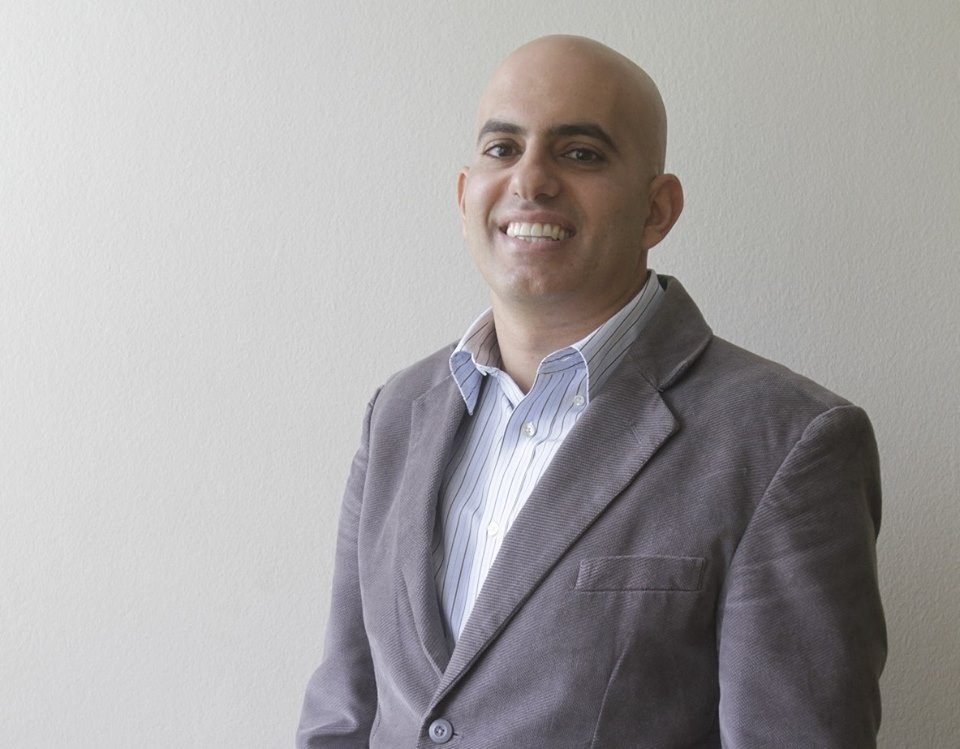

Luis obtuvo su maestría en Ingeniería Civil en la Pontificia Universidad Católica del Perú. Él es muy hábil en el uso del análisis de las condiciones antropomórficas y antropológicas de diversas comunidades para analizar su nivel de vulnerabilidad ante desastres. Su experiencia en estas áreas ha sido utilizada en varios proyectos de investigación.
Luis Izquierdo Horna Ingeniero Civil E: luis.izquierdo@pucp.pe

Ramzy obtuvo su doctorado en Ingeniería Civil y Ambiental en la Universidad del Estado de Arizona. Es ingeniero civil y ambiental, ampliamente capacitado en la aplicación de conceptos y métodos de Ingeniería Sostenible, Ecología Industrial, Ingeniería y Administración de Sistemas de la Tierra. Él es muy hábil en el uso del Análisis de Flujo de Materiales y Análisis de Ciclo de Vida. Su experiencia en estas áreas ha sido utilizada en varios proyectos de investigación
Ramzy Kahhat, Ph.D Ingeniero Civil E: ramzy.kahhat@pucp.edu.pe